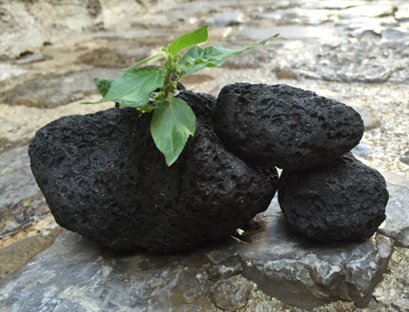

Susan Feller Mollet
Both daily situations and life changing events influence my work.
Homage Exhibition
Susan Mollet employs five works in her exhibition in the Forum Gallery at Brookhaven College, June 6 - August 4, 2014. All elicit an elegiac tone that extends beyond the particularity of individual, private, loss to a broader engagement of the question of what remains of love after the loss of the beloved. Beginning in the circumstances of loss and of personal memories of what was once presence, the works give form to absence, in a terrible and poignant beauty.

Entering the gallery beyond the free standing north wall, one first sees EARTHLY BURDENS.
The work combines a wooden stepladder surmounted with a wire ladder, which continues the ascent beyond the level of the wooden ladder. On the steps of the wooden ladder, and around it on the floor, empty plastic pill bottles, and ceramic simulacra of pill bottles, slip cast in white unglazed slip, evoke the paraphernalia of medicine, treatment - the hygienic.
The wire ladder, hand formed from aluminum, diminishes with its extension in space, forcing the perspective with strong convergence. The duality of lower and upper register evokes the dichotomy of life and death, of earth and heaven, which while distinct are connected in a continuity transcending the division. Most broadly, EARTHLY BURDENS gives form to a movement from sorrow to transcendence in passage from the temporality of the mortal to the eternal.

BOTH SIDES NOW is a circle of ceramic house forms, made of heavily grogged stoneware, enclosing a circle of sand and surrounded by fragments of fired clay.
Homage:"Before She was Mom"

One evening, after my mom died, my sister and I ended up sitting on the floor going through boxes of old pictures of her. I was especially drawn to the ones depicting her life before kids...before she was mom. The images are digital decals, made from the original pictures, fired onto porcelain. Boxes are made of stoneware.

Found Objects & Clay
In this society, objects that were at one time useful and important are often carelessly discarded and sent to landfills with little regard for the consequences. Therefore, the daily ritual of recycling is very important to me and has now found its way into my work.

Letters Never Sent
Letters Never Sent is comprised of personally written letters silkscreened onto porcelain, procelain, written to people who are no longer in my life, saying things I wish I had said to them when I could. Most of the text is unreadable to the viewer, as the importance is not in the actual words.

Hanging it Up
23 x 12 x 7", Steel hook, rope, and earthenware fired with nails

Functional Sculpture
The Japanese term "yonobi" refers to a balance between beauty and functionality, to find beauty and spirit through the usage of common objects in our daily encounters. I'm increasingly interested in exploring that balance of beauty, curiosity, and functionality, as seen through this work.


Roches, Pierres, et Caillous Lisses
"Rocks, Stones, and Smooth Pebbles" were made while I was in an artist-in-residence program in Vallauris, France,inspired by the black and white marble used in the Siena Duomo in Italy and the smooth water-worn dark rocks with white lines and circles found on the beaches in France.


Stones
Sometimes life affords you an extraordinary experience that enriches you and your perspective in ways that unfold. Turkey on a Fulbright study grant. The making of these pieces gave me a chance to reminisce, reflect, and relive the time I spent in a country I came to love and respect for its diverse landscapes, extraordinary natural beauty, rich history and welcoming people.

To say that I have tried to recreate places or times is not exactly true. Many of the forms are intuitively made and may simply reference a site or an event, a mood or a feeling that is apparent only to me. Some of the text I have incorporated is taken from a collective journal written by the group, each person chronicling two or more days of the journey. Most pieces reference the abundant ancient stone ruins, stone walls, mysterious mounds not yet excavated, and rugged landscape. But all are a grasp at making permanent that which is an incredible memory for me. From this country of extreme contrasts I came away with textures, colors, forms, friends and images that will always stay in my mind.


OIl Cans

Even as a kid I collected objects, always enjoying the variations on one theme, mostly with rocks and leaves then. But the idea for this series began as I was observing my own collection of old oil cans. I noticed their quiet and understated sense of beauty and economy of line and form. I became aware of the spouts and bodies as line against volume and variety within unity. There were figural implications as well as interplay of forms and negative and positive space. Then I found myself referencing these to a time in my life that was much more quiet and simple, as they were.


Artist


Susan Mollet's artwork is autobiographical and often cathartic in nature. Each series stems from a personal event or situation with a connection primarily expressed through objects.
Her work is exhibited in solo, group, and invitational shows and can be seen in a variety of publications. Among other opportunities, she has participated in a Fulbright-Hays study grant to Turkey and Artist in Residence program in France. Susan resides and maintains a studio in Dallas, Texas. She holds a B.S. from Southwestern University and the M.Ed. and M.F.A. from Texas Woman’s University.
Metals
Inspired by retirement, I have begun to revisit the medium of metal for some of my artwork. I work with silver, steel, copper, and aluminum and continue to bring the idea of everyday objects into my pieces.